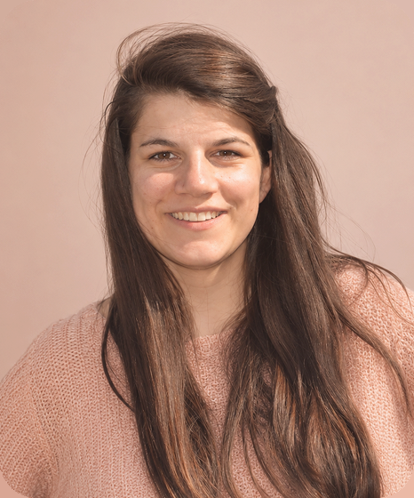

Alison
FAIDHERBE
Développeur web et web mobile
En reconversion dans le développement web, je serai disponible dès décembre 2026 pour mettre mes compétences et ma motivation au service de nouveaux projets.
- Marseille (13)
- linkedin.com/in/alliiissonnee
- github.com/Alliiissonnee
Expériences professionnelles
-
Août – octobre 2026Vaniseo – Agence webMARSEILLE (13)
Stagiaire développeur web WordPress
- Conception et réalisation complète du site e-commerce Foorthune (WordPress / WooCommerce), du cahier des charges à la mise en ligne.
- Personnalisation CSS / PHP (thème enfant) et maquettage de boutiques pour plusieurs clients (Laseris, Hexapol).
-
2015 – 2026Ministère des Armées – Armée de terreSUIPPES (51) · CANJUERS (83)
Maître de chien
- Dressage, entraînement et suivi de chiens opérationnels.
- Capacité d'adaptation aux différents chiens et environnements.
-
2015GendarmerieANNECY (74)
Gendarme adjoint de réserve
- Participation aux missions de sécurité et de prévention sur le terrain.
- Travail en équipe dans le respect strict des procédures.
-
2015SupermarchéANNECY (74)
Hôtesse de caisse
- Accueil et encaissement de la clientèle.
- Développement du sens du service et de la relation client.
Formations et diplômes
-
2026FONTENAY-LE-COMTE (85)
Titre professionnel de niveau 5 – Développeur web et web mobile (en cours, fin novembre 2026).
-
2025CANJUERS (83)
Prévention et Secours Civiques de niveau 1 (PSC1).
-
2020SUIPPES (51)
Certificat de qualification technique supérieur : permet de diriger une équipe de 9 personnes.
-
2015SEYNOD (74)
Baccalauréat ST2S – Sciences et Technologies de la Santé et du Social.